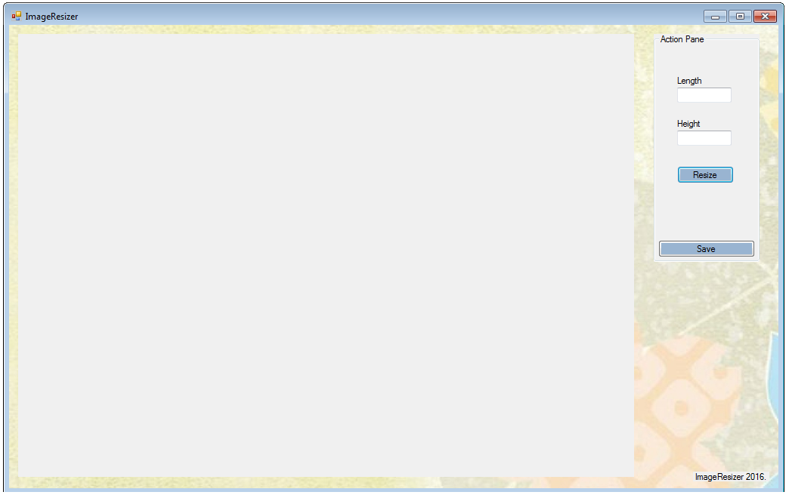

Bonjour
Basic Image Resizer
Written in Visual Basic, this is a powerful ImageResizer for your Windows PC.
Just put up the Length and Height of the Photograph
and then choose the image by clicking on the
Resize button, and the resized photo appears for you with
the below image formats
BMP, GIF, ICO, JPG, PNG & TIFF

Baam! Powerful yet
2016 Abhijeet Das